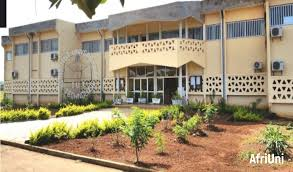

Bienvenue à l'IUT de Ngaoundéré
Pôle d'excellence académique pour former les techniciens de demain


Présentation de l'IUT
L'Institut Universitaire de Technologie (IUT) de Ngaoundéré est un établissement public d'enseignement supérieur rattaché à l'Université de Ngaoundéré.
Il s'est imposé comme un acteur majeur de la formation technologique au Cameroun, accueillant des étudiants désireux d'acquérir des compétences pratiques directement applicables en entreprise.
Localisation et Missions
Situé sur le grand campus de Dang à Ngaoundéré, l'institut a pour missions fondamentales de :
- Dispenser des enseignements théoriques et pratiques de haut niveau.
- Formuler des cadres moyens et des techniciens supérieurs qualifiés.
- Développer la recherche appliquée face aux besoins réels du monde industriel.
- Renforcer le partenariat école-entreprise à travers des stages professionnels.
Offre de Formation
Génie Biologique et Agro-alimentaire
Génie Industriel et Maintenance
Sciences de Gestion
Conditions d'Admission & Diplômes
Diplômes d'entrée requis : Baccalauréat (Scientifique, Technique ou Commercial), GCE Advanced Level, ou tout diplôme équivalent.
Modes de sélection : Admission principale sur concours officiel écrit pour le cycle de DUT, ou sur examen de dossier pour certaines licences technologiques.
Infrastructures Disponibles
Pour assurer une formation de qualité, l'IUT met à disposition :
• Des laboratoires de microbiologie et de chimie des aliments.
• Des ateliers de mécanique et de maintenance industrielle.
• Une bibliothèque numérique universitaire interconnectée.
• Des salles informatiques équipées.
Partenariats Nationaux
Les étudiants de l'IUT de Ngaoundéré s'insèrent et effectuent des stages dans de grandes structures partenaires :